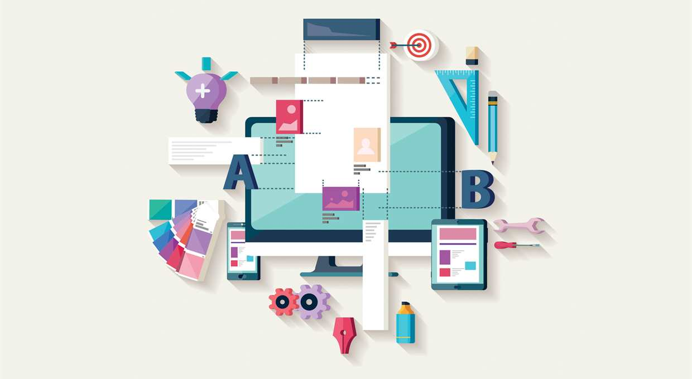
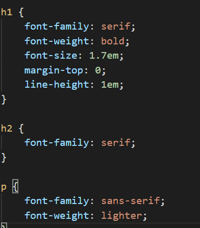

Webudvikling
HTML (HyperTextMarkup Language)
Når man skal kode en hjemmeside, skal man lave en HTML fil. Dette gør du i et editor program, som f.eks. Brackets eller Visual Studio Code og mange flere. Man bruger HTML til at strukturere ens hjemmeside, gøre den læsbar for ens brugere, og skabe en vis form for overblik. Det er vigtigt når man koder med HTML, at man holder en struktur, så det er nemt for en at se hvad man har levet, men også for at gøre det overskueligt, hvis man evt. skulle havde lavet en fejl.
Hypertekst består ikke kun af tekst det kan også være billeder. HTML hypertekst er opbygget af flere forskellige elementer og dele. Der er tags, som er en gemt del af din kode, og er derfor ikke synlig for læserne. Tags indeholder b.la. attributter, de er med til at styre hvad det bestemte tag skal gøre. der vil altid være en værdi tilknyttet med attributter og denne værdi er med til at specificere hvordan den skal være.
Semantiske tags
Der er nogle forskellige semantiske tags når man koder. f.eks er der:
h1: som er den store overskrift, jo mindre man vi have disse overskrifter skifter man tallet “1” ud med f.eks. “2” eller “3”.
header: dette er det semantiske tags for sidehovede
footer: dette tags minder om header men er dog anderledes da denne blok ligger i bunden i stedet for i toppen.
Der er dog mange flere forskellige semantiske tags end de ovenstående nævnte.
HTML Historie
HTML eller hypertekst udspringer af den information der oprindeligt opstod i det tidlige tyvende århundrede. Der var mange forskere, der undersøgte dette område og prøvede på at løse problemet på forskellige måder. Henri Lafontaine byggede The World Place of Knowledge. Her kunne man skrive ind og få svar på sine spørgsmål.
MEMEX eller også kaldt memory extender, ideen bag dette var at gøre det mere automatiseret, ved at lave et afkrydsningsskema og dermed gøre det mere anvendeligt så man hurtigere kan finde den information man gerne vil finde.
CSS
CSS (Cascading Style Sheets) er det du bruger når du skal style din hjemmeside. Det er her du laver alle de grafiske udtryk du gerne vil have på din side, om det er din baggrundsfarve, eller et billede du skal have sat ind. Man kan bruge CSS på 3 forskellige måder, inline, embeded og via et separat stylesheet dokument.
Inline her skriver du din CSS lige ind i sin kode.
Inbeded her skriver man sin CSS kodning øverst oppe i sin HTML dokument.
Separat stylesheet her skriver man alle sine styles og CSS kodning ind i et separat dokument, så man har ens HTML og ens CSS hver for sig, men man linker til denne fil i ens HTML og derved bliver de forbundet.
Der er nogle forskellige kaskadereglen i CSS, disse regler er nedarvet af style, og jo mere specifikt ens tags er jo højrer i rang er det. Derfor skal man hvis man har skrevet et højtrangerende tag, ind og gøre de mindre rangerede tags, mere specifikke til hvor man gerne vil have det hele i ens kodning.
Synstaks
Når man koder, kan man style ens forskellige afsnit. Dette gør man ved hjælp at forskellige selectors, så hvis man f.eks. har flere forskellige tags i P, men kun vil lave en bestemt style på en eller to af sine P’ere så kan man sætte denne P i f.eks. ek Class. En Class er en selector, som kan bruges på alle de afsnit man synes er relevante at bruge den på. Man kan også bruge et #ID, denne form for selectors som gør det endnu mere specifikt, så man ved at det kun er den sektion man har givet #ID’et der bliver valgt, hvis man vil omstyle ens side. Dog hvis man skal bruge #ID’et mere end en gang, skal man give disse selector forskellige navne, og for at gøre det mere overskueligt for en selv, så kan man navngive disse, med et navn der er relevant for ens sektion.
CSS Historie
Den første version af CSS blev udviklet af Håkon Wium Lie, det blev adopteret af W3C som overtog standardiseringens arbejdet. Den første reelle browser som understøttede CSS var IE3 og kort efter gjorde Netscape 4.0 også men her var der mange fejl.
Internettets Historie
Når vi snakker om internettets historie og udvikling kan man dele det op i 5 forskellige perioder. I disse perioder kan vi se hvordan internettet har udviklet sig gennem tiden fra da den første webbrowser blev lanceret, til det web vi kender og bruger i dag.
Det tidlige eksperiment (1993)
Under konstruktion (1996)
Semantiske søgning (2000)
Det sociale netværk (2003)
Det mobile web (2010)
Det tidlige eksperiment
I denne periode blev den første brugbare browser udviklet. Webbets første periode var karakteriseret ved, at alle prøvede at eksperimentere med hvordan sådan et websted skulle konstrueres. Allerede inden Mosaic-browseren var blevet lanceret, havde flere forskellige virksomheder lavet deres eget websted, f.eks. havde Det Hvide Hus fået dets egen hjemmeside. Dog var der mange tekniske begrænsninger i HTML-sproget og browserne, men på trods af disse begrænsninger, var der mange private og virksomheder der begyndte at gøre brug af internettet.
Det websted der fik meget opmærksomhed i 1993, var webstedet for de olympiske vinterlege i Lillehammer, her blev der vist tekster, billeder og der blev løbende publiceret resultater. Websteder var dog konstrueret med primitivt hypertekst, som ikke gjorde noget godt for det visuelle udseende på websiden
Under konstruktion (1996-2000)
I midten af 1990’erne var der mange private brugere der brugte webbet, da det gav uanede muligheder for kommercielle aktører. Amazon.com blev i 1994 lanceret, og var en af de første webshops. De fik hurtigt succes med at sælge bøger, og derved var der mange andre firmaer som fulgte trop. Sådan blev e-commerce-sites skabt. Designeren David Siegel blev beundre og efterlignet for den måde han skabte websteder på, da han forsøgte at skabe en visuel metafor. Den danske Jakob Nielsen var i modsætning til Seigel mere fokuseret på det rent funktionelle brug af webdesign, han skiftede gradvist fra at en videnskabelig baggrund til at blive webdesigner.
I 1996 udkom Microsoft med deres 3.0 version browser, nemlig Internet Explorer. Dette blev startskuddet til browserkrigen, som foregik mellem Microsoft og Netscape, som havde markedsandel på 80%. I den kamp der udspillede sig mellem Microsoft og Netscape, brugte MIcrosoft en trojansk hest, Windows, dette program blev automatisk installeret på alle deres computere. Dermed fik de presset Netscape ud af markedet og satte sig på 96% af browser markedet.
Semantiske søgning (2000-2003)
Eksperterne mente, at når årsskiftet fra år 99 til 2000. Den millennium bug ville skabe store problemer for brugerne og mange måtte se til mens mange milliarder dollars forsvandt, under det såkaldte Dotcom- krak, på blot få måneder. Dem der formåede at holde på handlende kunder over internettet, mistede mange penge på det. I Denne periode kom søgemaskinen Google frem. Google sorterede søgeresultaterne med en algoritme, pagerank, som var i stand til at bedømme sidernes indhold og betydning, i forhold til søgerens relevans. Det var i denne forbindelse, man begyndte at bruge SEO (Search Engine Optimization).
Ligesom søgemaskinen Google fik Microsoft Internet Explorer en stor betydning i begyndelsen af det nye årtusinde. Tim Berners-Lee begik en grundlæggende fejl i sit design af HTML. Han havde glemt at skille indhold og præsentation ad. Cascading Style Sheets (CSS) løste problemet ved at overtage præsentationen, og dermed overlade indholdet til HTML.
Det Sociale Netværk (2003-2010)
I denne periode skiftede magten over nettet fra de etablerede autoriteter til brugerne og dermed blev web 2.0 et socialt web. Det var også her princippet den lange hale først blev bemærket, i forbindelse med salg af musik på nettet. Her var udvalget af musik ubegrænset, derfor kaldes det den lange hale.
Dette var et generelt fænomen, dog set i bakspejlet var det svært at forstå hvorfor SNS, ikke var en del af webbet fra starten. Et af de SNS'ere, Linkedin, blev kreeret for at skabe og vedligeholde et netværk for professionelle. MySpace var skabt for de musikintresseret teenagerer i den vestelige del af verden, og gik dermed i den modsatte retning. MySpace nåede 75 mio. brugere, og blev opkøbt af den australske mediemogul Rupert Murdoch i 2005 for 580 mio USD. Dog var dette et dårligt køb da facebook opstod og i 2015 nåede 1,4 mia aktive brugere.
Det Mobile Web (2010-)
Da Apple udkom med deres iPhone i 2007 og deres iPad i 2010 blev vi introduceret til en ny kategori af web-brugere, nemlig mobil brugerne. I takt med at mobil skærmene blev berøringsfølsomme kunne man undvære tastaturet på dem og dermed blev de små computere. I takt med at der kom så mange tablet og mobil brugere, skulle man derfor til at omtænke design så det blev tilpasset de mange forskellige skærmstørrelser.
Responsiv Design og Grid
Responsiv Design, det er når man laver sit design så det kan være i forskellige størrelser afhængig af om man sidder med sin mobil, tablet eller ved en computer, og giver dermed brugeren den bedste oplevelse uanset skærmstørrelsen.
Der er 4 forskellige overordnede tilgange til responsiv design.
Statisk (static, fixed width)
Flydende (Fluid, liquid, flydende, elastisk)
Adaptiv (adaptiv ADW)
Responsive (responsive, RWD)
Statisk (static, fixed width)
Her er ens layout baseret på nogle bestemte mål, det vil sige det er låst fast, fixed width. Det ændrer sig ikke ved forskellige skærmstørrelser, denne form er en meget dominerende form i de tidlige år af www´s domæne. Dette gør dog også at de tænkte funktioner er meget dårlige, hvis de ikke bliver åbnet på den tiltænkte skærm.

Flydende (Fluid, liguid, flydende, elastisk)
I denne tilgang tilpasser elementerne sig til bredden, og dermed kan elementerne blive meget smalle. Her bliver indholdet og funktionaliteterne vægtet højere end selve det grafiske design. Det er en udskilning af det æstetiske-orienterede design, nemlig Loss Of Control. Her bliver den plads man designer på oftest udnyttet meget bedre og giver dermed en bedre brugeroplevelse.

Adaptiv (adaptiv ADW)
Dette er en mellemting mellem den statiske og den responsive tilgang, her består ens design af en række statiske layouts. Det bliver styret af @mediagueries. Dog på skærme som ikke rammer de breakpoints man har indtastet, så vil der enten være for meget plads eller for lidt plads til ens design. Denne tilgang er dog oftest en måde man ikke vælger , hvis man har muligheden for at gøre ens kode responsiv. Dog bruger man denne måde, hvis man har et statisk layout som skal konverteres til at være responsiv, uden man skal skrive hele ens kode og design om. Ved denne tilgang skriver man dog mobile first.
Responsiv (responsiv, RWD)
Denne tilgang består typisk af et fluid layout, her er der dog lagt en række regler over layoutet som gør, at det kan ændre sig afhængigt af den skærmstørrelse brugeren sidder på.
En af de ting der også gør dette til en anden tilgangsmåde er, at ens HTML og CSS er det samme lige meget hvilken enhed man sidder med. Dette er blevet til den måde man oftest tilgår design i dag.
Når man bruger denne tilgang er det vigtigt man planlægger hvordan det skal se ud og at man altid starter med mobile first, da det er nemmere at gå fra lille skærm til stor skærm og ikke omvendt, da dette kan være med til at ødelægge ens design.
Moblile First
Når man designer, skal man altid tænke Mobile First, da det altid er nemmere at gå fra lille til stor skærm, uden man skal til at lave om i ens design. Da der oftere bliver brugt mobilskærme end der bliver brugt computer, da folk altid har deres mobil lige ved hånden.
Når man designer, så ens hjemmeside skal være responsiv, skal man altid lave i Mobile First, når man har den på plads kan man begynde at sætte breakpoints ind til de andre skærmstørrelser.
Progressive Enhancement, det er når man har flere features på enheder som kan håndtere dem, dette er også en typisk ting man gør når man designer Mobile First.
Der er også Graceful Degradation, dette er når man tager et hensyn til ens brugers oplevelse af ens side og design, dog er dette mere brugt når man designer Desktop First.

Grid

Når man skal designe en hjemmeside, der skal være responsiv til både mobil, tablet og desktop, så arbejder man i grid. Grid er en form for design, hvor man inddeler sine styles i forskellige “kasser”, dette er dog ikke synligt for brugerne, kun koderne.
Grid er et form for feltet system, her kan man placere sin style indenfor de felter man har skabt.
Et grid er med til at hjælpe en som designer, til at opbygge et layout og hjælper brugerne, når de skal danne et overblik over ens hjemmesides indhold. Når man opbygger et grid, så laver man en form for virtuelle kolonner, og disse former for kolonner er mest udbredt i interface design. Grid fokusere på problemløsningen og æstetikken, men jo mere simpelt grid man laver jo bedre effekt giver det.
Grid har en anatomi f.eks. kan man tage et stykke linjeret papir. Her bliver griddet defineret som de vandrette linjer, der er på papiret. Disse linjer kaldes for “flowlines”. Hvis man tilføjer lodrette hjælpelinjer, får man dermed en mulighed for at justere ens indholdselementer, både vandret og lodret. Ved hjælp af begge hjælpelinjer for vi således også flowline, som er de vandrette hjælpelinjer. Kolonner, som er når man har opdelt siden fra top til bund med lodrette hjælpelinjer. Rækker, vandrette inddelinger. Gutter, som er de mellemrum der kommer mellem kolonnerne og rækkerne, også kaldet grid.gap. Modul, som er den mindste “indhold container” der bliver dannet af grid-strukturen med de lodrette og vandrette linjer. Margen, der er afstanden mellem indholdet og kanterne yderst i designet. Og zone, der er ens større områder som bliver dannet af flere sammenhængende moduler.
Når man arbejder med grid, er der flere forskellige metoder men kan arbejde med. Der er kolonne-grid og modulære- grids.
kolonne-grid
Kolonne-grid er den mest udbredte form for grid, det er baseret på kolonner. De bliver mest anvendt i fronted-frameworks, som er bygget op omkring kolonne-grid. Denne form for grid er en enkel måde at skabe fleksibilitet og er derfor velegnet til at skabe et dynamisk format.
Modulære-grid
Et modulært-grid er et kolonne-grid, hvor der er tilføjet nogle vandrette linjer, så det er blevet til et “flowlines”. Med denne form for grid, opnås der et matrix lignende struktur. Hvor gridden skaber en struktur med små ensartede moduler. Det giver en øget kontrol over ens layout, da ens elementer kan justeres horisontalt og også vertikalt, i forhold til hinanden.
Kilder
HTML
PDF Intro til HTML - Niels Østergaard
CSS
PDF Intro til CSS - Niels Østergaard
Internettets historie
PDF Online Kommunikation s.346-371
Responsiv design og grid
PDF Grid - Niels Østergaard
PDF Responsiv i Praksis - Niels Østergaard
Interfacedesign fra ide til digital prototype Af Morten Rold